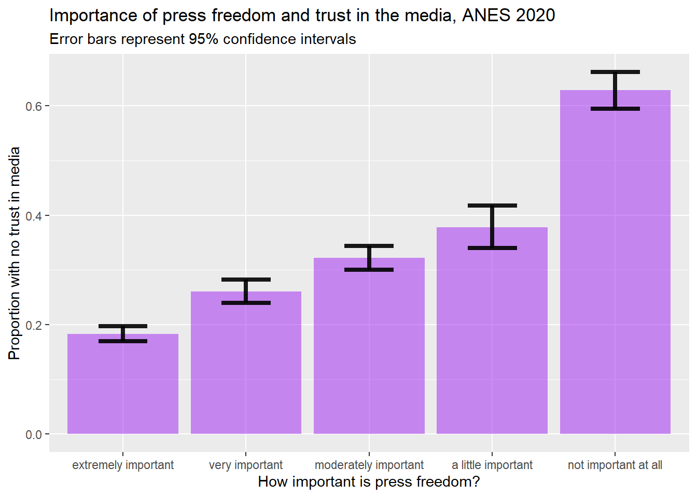

Chapter 7 From chi-squared to somers’ d
7.1 Getting started with this chapter
To get started in today’s chapter, open the project that you made in lab 1. If you forgot how to do this, see the instructions in section 2.2.
Now, open a new script file and save it in your scripts folder as “chapter 7 practice.” Copy and paste this onto the page (updating the text so that it is about you):
####################################
# Your name
# 20093 Chapter 7, Practice exercises
# Date started : Date last modified
####################################
#libraries------------------------------------------
library(tidyverse)
library(Hmisc) #the cut2 command helps us simplify interval variables
library(scales) #this is useful when the labels on our axes overlap
library(tigerstats) #colPerc can also be useful with crosstabs
library(DescTools) #this has tools to calculate Cramer's V, Lambda and Somers' DNow select all the text on this page, run it, and save it.
7.2 Calculating chi-squared
In chapter 6, we learned two tools to think about relationships between variables: a t-test of independent means and a t-test of independent proportions. These tests let us compare two groups and see whether their means or proportions differ in a statistically significant way. However, what if we want to compare more than two groups at the same time? And, in the case of proportions, what if we want to look at several different proportions at once? For example, the proportion of people that support, oppose and neither support nor oppose military aid to Ukraine?
In other words, to return to a concept from chapter 4, what if we wanted to look at a whole cross tabulation table (a crosstab) and decide whether the values that we observe are likely due to random sampling error, or due to a correlation at the population level?
The most basic way to do that is by calculating chi-squared. That statistic tells us whether the values of variables that we observe in a crosstab are so different from what we would expect to observe if there was no association between the variables at the population level that we can conclude that there likely is such a relationship. For this example, we will think about the relationship between the dominant religion of a country and percent of legislators that are women. We will think through that question with help from our world2025 dataframe, using the “religion” variable and the “femLeg” variable.
Before we generate our crosstab, we first have to deal with an issue: the femLeg variable is interval. If we generate a crosstab with that variable as the DV, that crosstab will have one row for each value of that variable, which would give us 160 different rows.6 We don’t want that! Instead, let’s use the technique that we learned in section 4.6.1 and simplify that variable into a new variable called “femLeg3.” First, we will use the cut2 command to generate a variable with three groups:
Next, we can look at the levels of our new ordinal variable, like this:
## [1] "[ 0.0,20.4)" "[20.4,32.2)" "[32.2,61.2]"Finally, we can rename those levels, like this:
Now, we can generate a crosstab, with this command (remember when generating a crosstab we put our dependent variable first):
## religion
## femLeg3 Eastern Hindu Jewish Muslim Orthodox Other Protestant Roman Cath Sum
## fewer 9 1 0 26 4 5 7 6 58
## typical 4 0 1 14 3 4 5 22 53
## many 1 1 0 6 5 2 14 23 52
## Sum 14 2 1 46 12 11 26 51 163This crosstab gives us raw numbers, which are interesting to look at. It also foreshadows a potential limitation to our conclusions. Because we only have one predominantly Jewish state (Israel) and two predominantly Hindu states (Nepal and Mauritius) in our sample, we will be attempting to generalize about those two kinds of states from a tiny sample. We discuss that issue more below. To better interpret this crosstab, we need to look at column percents, which we can do with this command:
## religion
## femLeg3 Eastern Hindu Jewish Muslim Orthodox Other Protestant Roman Cath
## fewer 64.29 50 0 56.52 33.33 45.45 26.92 11.76
## typical 28.57 0 100 30.43 25.00 36.36 19.23 43.14
## many 7.14 50 0 13.04 41.67 18.18 53.85 45.10
## Total 100.00 100 100 100.00 100.00 100.00 100.00 100.00Take a look at that table. You can see that there are some pretty noticeable differences in female representation across states with different major religions. For example, the religion with the largest percentage of states with many women in their legislatures is Protestantism, with 53.85%, followed by Roman Catholicism, with 45.1%. To help us visualize these differences, we can generate a stacked bar graph using the technique that we learned in section 5.2:
plotting.data<-world2025 %>%
filter(!is.na(religion)&!is.na(femLeg3)) %>%
group_by(religion, femLeg3) %>%
summarise(n=n()) %>%
mutate(freq = n / sum(n))
ggplot(plotting.data, aes(x = religion, y = freq, fill=femLeg3)) +
geom_col(position = "fill") +
scale_y_continuous(labels=percent)+
scale_x_discrete(guide = guide_axis(n.dodge=2))+
scale_fill_viridis_d(name="Women in legislature")+
ggtitle("Countries' major religion and women in legislature")+
xlab(NULL)+
ylab(NULL)
Clearly, there are differences in the distribution of women in legislatures in countries with different major religions. But, are these differences statistically significant? To test that, we can ask R to calculate the chi-squared value that is associated with this relationship. We can use the chisq.test() command, and in the parenthesis we can put the command that generates crosstab that we want to run this test on. Note: be careful to use the chisq.test() command on the command for a crosstab with actual values and not percents, or the test will not be accurate.
Here is how we would generate a chi-squared value for the relationship between dominant religion of a country and the percent of women in the legislature:
## Warning in chisq.test(xtabs(~femLeg3 + religion, data = world2025)):
## Chi-squared approximation may be incorrect##
## Pearson's Chi-squared test
##
## data: xtabs(~femLeg3 + religion, data = world2025)
## X-squared = 40.057, df = 14, p-value = 0.00025Look at what R tells us in this output (the text just above this passage, beginning with ## Pearson's Chi-squared test). First, R reports that it will be giving us the results of a Pearson’s Chi-squared test. Second, it repeats the command that we entered. Third, it reports the value for chi-squared (which it writes as X-squared), tells us our degrees of freedom (calculated by (number of rows-1)*(number of columns-1)) and reports our p-value. Lower p values mean that the relationship that we are observing is more likely to be statistically significant (i.e. not due to random sampling error). In this case, our p-value is very low: .00025, which means that, according to the chi-squared test, this relationship is statistically significant (because .00025 is lower than .05, our conventional benchmark).
However, look at warning at the top: R is warning us that this estimate may be wrong. Why? This has to do with the expected values of the cells in our crosstab. Let’s take another look at the crosstab that we generated earlier:
## religion
## femLeg3 Eastern Hindu Jewish Muslim Orthodox Other Protestant Roman Cath Sum
## fewer 9 1 0 26 4 5 7 6 58
## typical 4 0 1 14 3 4 5 22 53
## many 1 1 0 6 5 2 14 23 52
## Sum 14 2 1 46 12 11 26 51 163Look at top cell in the “Hindu” column: countries where Hinduism is dominant that have fewer women in their legislatures. There is only one country in that category. If there were no relationship at all between a country’s religion, we would expect that cell to be the row total*the column total/the total number of cases in the table. So, (58*2)/163, which is .7127. As a general rule, if some cells in a crosstab have an expected value of less than 5, value of the chi-squared test will be artificially high, and we will be more likely to make Type I error (rejecting a true null hypothesis). In this case, we can actually look at the expected values of all of our cells with this command:
## Warning in chisq.test(xtabs(~femLeg3 + religion, data = world2025)):
## Chi-squared approximation may be incorrect## religion
## femLeg3 Eastern Hindu Jewish Muslim Orthodox Other Protestant
## fewer 4.981595 0.7116564 0.3558282 16.36810 4.269939 3.914110 9.251534
## typical 4.552147 0.6503067 0.3251534 14.95706 3.901840 3.576687 8.453988
## many 4.466258 0.6380368 0.3190184 14.67485 3.828221 3.509202 8.294479
## religion
## femLeg3 Roman Cath
## fewer 18.14724
## typical 16.58282
## many 16.26994Looking over this output, we can see that we have many cells with expected values below 5, and thus our estimated chi-squared is less helpful.
7.3 Lambda and the PREs
One way to address the deficiency in chi-squared—that chi-squared is less accurate when the expected values of some of our cells is quite small—is with Lambda. Lambda is the first of several Proportional Reduction in Error (PRE) statistics that we will be learning about in class.
PRE statistics produce a value between 0 and 1 or between 0 and |1| (in the case of PRE statistics that let us look at the direction of relationships). These statistics are useful in interpreting both the significance and strength of relationships. A PRE statistic with a value of 0 means that knowing the independent value has no impact on our ability to correctly predict the value of the dependent variable, while a PRE statistic with a value of 1 (or -1, in the case of a negative relationship) means that knowing our independent variable will allow us to perfectly predict the value of our dependent variable (these kinds of perfect relationships do not exist in actual political science). A PRE statistic of .35, for example, tells us that knowing our independent variable improves our ability to guess the dependent variable by a probability of .35 (or 35%) compared with how good our guess would be if we did not know the independent variable.
Here is a general rule of thumb when interpreting PRE-statistics on social science data (this is based on Pollock and Edwards 2019, 225):
## Warning: 'xfun::attr()' is deprecated.
## Use 'xfun::attr2()' instead.
## See help("Deprecated")
## Warning: 'xfun::attr()' is deprecated.
## Use 'xfun::attr2()' instead.
## See help("Deprecated")| Range of values | Strength of relationship |
|---|---|
| 0 and .1 | Weak relationship |
| 0 and -.1 | Weak relationship |
| .1 and .2 | Moderate relationship |
| -.1 and -.2 | Moderate relationship |
| .2 and .3 | Moderately strong relationship |
| -.2 and -.3 | Moderately strong relationship |
| Above .3 or below -.3 | Strong relationship |
We can ask R to calculate Lambda in a way similar to the way that we had R calculate chi-square:
## [1] 0.2119816In other words, R is telling us that knowing the religion of a country improves the probability that we will correctly guess the level of economic equality in that country by about .21 (or 21%). That is a moderately strong relationship. However, that statistic alone does not tell us about statistical significance (or the chance that the relationship that we observe is due to random sampling error). To fix that, we can add “conf.level=.95” to our command from above (we could also set the confidence level to .99, or .9, or something else, but .95 is the standard in political science). This is our new command:
## lambda lwr.ci upr.ci
## 0.2119816 0.1281852 0.2957780While this output does not directly report a significance level, unlike the t-tests and chi-squared tests that we ran earlier, the confidence interval that it reports is extremely helpful. This tells is that there is a 95% chance that the true value of Lambda is somewhere between .128 (which would be a moderate relationship) and .296 (which would be a moderately strong relationship). In other words, we are pretty confident that this relationship is moderate or moderately strong. If this reported interval had included 0, we would have concluded that the relationship was not statistically significant.
7.4 Cramer’s V
Lambda sometimes underestimates the strength of a relationship when there is little variation between the overall mode of a sample and the modes of each of our groups. In that case, we can use Cramer’s V instead. Or, given how easy it is to ask R to calculate these statistics, we can actually ask R to calculate chi-squared, lambda, and Cramer’s V, and if they provide similar information, that is a good sign that there might be something to our hypothesis.
Unlike Lambda, Cramer’s V is not a PRE statistic, which means that we can’t interpret it in terms of improved probability of guessing our dependent variable with knowledge of our independent variable. However, like Lambda, it reports a statistic between 0 and 1, and higher values mean that we have a stronger relationship. We can also use the same ” conf.level=.95” qualifier to get a confidence interval around our estimate, like this:
## Cramer V lwr.ci upr.ci
## 0.3505328 0.1606482 0.4060984Seeing this confidence interval with a lower bound nowhere near zero gives us additional evidence that there is likely a relationship between religion and economic equality at the population level.
7.5 Somers’ D
All of the measures of association that we have looked at so far have been useful for thinking about the relationship between two ordinal or nominal variables. But if we have two ordinal variables, we can also start to think about the direction of our relationship. In other words, we can go beyond asking whether knowing our independent variable helps us predict our dependent variable and ask whether an increase in our independent variable is associated with an increase (or decrease) in our dependent variable.
This kind of question does not make sense when discussing nominal variables, such as marital status. In other words, it does not make sense to ask whether marital status “increasing” leads to income increasing, because there is no order in which the values for the marital status variable (divorced, married, never married, separated, and widowed) must be listed.
For this example, let’s return to the relationship between ideas about whether America is better than other countries and support for aid to Ukraine that we looked at in section 6.7.
My theory is that people that believe that America is better than other countries will tend to support military aid to Ukraine, because they will conceive of that kind of aid as a way to spread American values abroad (a democracy fighting off invasion from an autocracy). Before we can do our statistical tests of this theory, we can take a look the data in graphics and crosstabs to see whether the data seems to support our theory.
We can use the following two commands to generate a crosstab and a table of the columns percentages (notice that I put the dependent variable, armUkraine, first in these commands):
xtabs(~armUkraine+natPride, data=anes2024)
colPerc(xtabs(~armUkraine+natPride, data=anes2024))One tip before we move on: R is almost always willing to create an object so that you don’t have to keep typing the same things over and over. So, in this case, you can make your crosstab an object called xt like this:
Then, to see what that table looks like, you can run this line of code:
## natPride
## armUkraine a lot better somewhat better the same somewhat worse
## favor strongly 387 341 299 166
## favor 239 202 200 129
## favor weakly 51 72 61 36
## neither 276 297 327 187
## oppose weakly 33 30 32 33
## oppose 104 101 93 52
## oppose strongly 187 117 107 98
## natPride
## armUkraine a lot worse
## favor strongly 88
## favor 67
## favor weakly 16
## neither 112
## oppose weakly 9
## oppose 34
## oppose strongly 80After that, to generate the table with column percents, you can go like this:
## natPride
## armUkraine a lot better somewhat better the same somewhat worse
## favor strongly 30.31 29.40 26.72 23.68
## favor 18.72 17.41 17.87 18.40
## favor weakly 3.99 6.21 5.45 5.14
## neither 21.61 25.60 29.22 26.68
## oppose weakly 2.58 2.59 2.86 4.71
## oppose 8.14 8.71 8.31 7.42
## oppose strongly 14.64 10.09 9.56 13.98
## Total 100.00 100.00 100.00 100.00
## natPride
## armUkraine a lot worse
## favor strongly 21.67
## favor 16.50
## favor weakly 3.94
## neither 27.59
## oppose weakly 2.22
## oppose 8.37
## oppose strongly 19.70
## Total 100.00Let’s look at the second table, with the percents. The first column in that table tells us that, among those who believe that the US is a lot better than other countries, 30.31% strongly favor military aid to Ukraine, and 14.64% oppose military aide to Ukraine strongly. However, the last column shows us thatm among those to think that the US is a lot worst than other countries, 21.67% strongly favor military aid to Ukraine, and 19.7% oppose. That seems like a piece of evidence for our theory!
We have a number of choices for how to represent this relationship graphically. Since we generated a bar graph with error bars in of this relationship in section 6.7, for this section let’s generate stacked bar graph.
plotting.data<-anes2024 %>%
filter(!is.na(armUkraine)&!is.na(natPride)) %>%
group_by(natPride, armUkraine) %>%
summarise(n=n()) %>%
mutate(freq = n / sum(n))
ggplot(plotting.data, aes(x = natPride, y = freq, fill=armUkraine)) +
geom_col(position = "fill") +
scale_y_continuous(labels=percent)+
scale_x_discrete(guide = guide_axis(n.dodge=2))+ #this line is in here because without it the x-axis labels overlap. You can remove it if that isn’t a problem
scale_fill_viridis_d(name="Arms to Ukraine")+ #this color palate is made to be readable for colorblind people
ggtitle("National Pride and Aid to Ukraine, 2024")+
xlab("Is the US better than other countries?")+
ylab(NULL)
Notice that the bars are going in the way our theory predicted – people that think America is better than other countries also seem to be more supportive of errors to Ukraine. But are these differences larger than we would expect to see from random sampling error?
First, if you didn’t generate the crosstab object before, you can do that now like this:
xt<-xtabs(~armUkraine+natPride, data=anes2024)Now you can simply execute these three commands:
##
## Pearson's Chi-squared test
##
## data: xt
## X-squared = 82.713, df = 24, p-value = 2.236e-08## lambda lwr.ci upr.ci
## 0.02142435 0.00690347 0.03594523## Cramer V lwr.ci upr.ci
## 0.06659213 0.04053637 0.07202800These three tests all show a statistically significant relationship. The statistics that we just calculated let us discuss the strength (in the case of Lambda) and significance (in the case of Cramer’s V and chi-squared) of the relationship that we are interested in, but how about the direction? To examine the direction of a relationship between two ordinal variables, we can use a Somers’ D test. Somers D is a Proportional Reduction in Error (PRE) statistic like Lambda. Unlike Lambda, however, which ranges from 0 to 1, Somers’ D can range from 0 to 1 OR -1. A perfect negative relationship, where knowledge of the independent variable lets us guess the value of the dependent variable with absolute certainty, would generate a Somers’ D score of -1, while a perfect positive relationship would generate a Somers’ D score of 1. A Somers’ D score of 0 means that knowing the independent variable gives us no insight at all in predicting the dependent variable.
Before we run Somers’ D, we need to see whether our hypothesis is predicting a positive or a negative relationship. What does it mean to “increase” or “decrease” on those two variables? For this, we can use the levels() command, like this:
## [1] "a lot better" "somewhat better" "the same" "somewhat worse"
## [5] "a lot worse"## [1] "favor strongly" "favor" "favor weakly" "neither"
## [5] "oppose weakly" "oppose" "oppose strongly"The levels() command only works with ordered factors (which is how R treats ordinal variables), and the output lists the scores of the variable from low to high. So, the lowest value on natPride mean that the respondent thinks that the US is “a lot better” than other countries, and the highest means that the respondent thinks that the US is “a lot worse” than other countries. Increasing values means less national pride. With “armUkraine”, the lowest value means that the respondent “favors strongly” arming Ukraine, and the highest value means that the respondent “opposed strongly” arming Ukraine. So increasing values mean less support for arming Ukraine. Since our hypothesis is that Americans with more national pride will be more likely to support arming Ukraine, we hypothesize a positive relationship between those two variables.
We run Somers’ D just like how we ran Cramer’s V, Lambda, and chi-squared, above:
## somers lwr.ci upr.ci
## 0.04664520 0.02246288 0.07082751This is telling us that there is a .95 probability that Somer’s D at the population level is between .022 and .071. In other words, there is a positive, weak, and statistically significant relationship between national pride and views on arming Ukraine. The relationship is in the direction that our hypothesis predicted, and it is statistically significant, but the weakness of the relationship means that we would only reduce our error in guessing views on Ukraine a small amount (about 4.66%) if we knew how much national pride someone had.
One note: Somers’ D is an asymmetric test, which means that it gives different results when you treat one of your two variables as independent than when you treat that same variable as dependent. So, be careful to list your dependent variable first when setting up your test.
7.6 Review of this chapter’s commands
## Warning: 'xfun::attr()' is deprecated.
## Use 'xfun::attr2()' instead.
## See help("Deprecated")
## Warning: 'xfun::attr()' is deprecated.
## Use 'xfun::attr2()' instead.
## See help("Deprecated")| Command | Purpose | Library |
|---|---|---|
| chisq.test() | Runs a chi-squared test on a pair of variables. In this class we use it on crosstabs that we generate with the xtabs() command, but you can also use it on a table that you generate with other commands or on a pair of variables that you define with a $. | Base R |
| Lambda() | Runs a Cramer’s V test (a test of the relationship between two nominal or ordinal variables) on a pair of variables. In this class we use it on crosstabs that we generate with the xtabs() command. | DescTools |
| CramerV() | Runs a Lambda test (a PRE test of the relationship between two nominal or ordinal variables) on a pair of variables. In this class we use it on crosstabs that we generate with the xtabs() command. | DescTools |
| SomersDelta() | Runs a Somers’ D test (a PRE test of the relationship between two ordinal variables) on a pair of variables. In this class we use it on crosstabs that we generate with the xtabs() command. | DescTools |